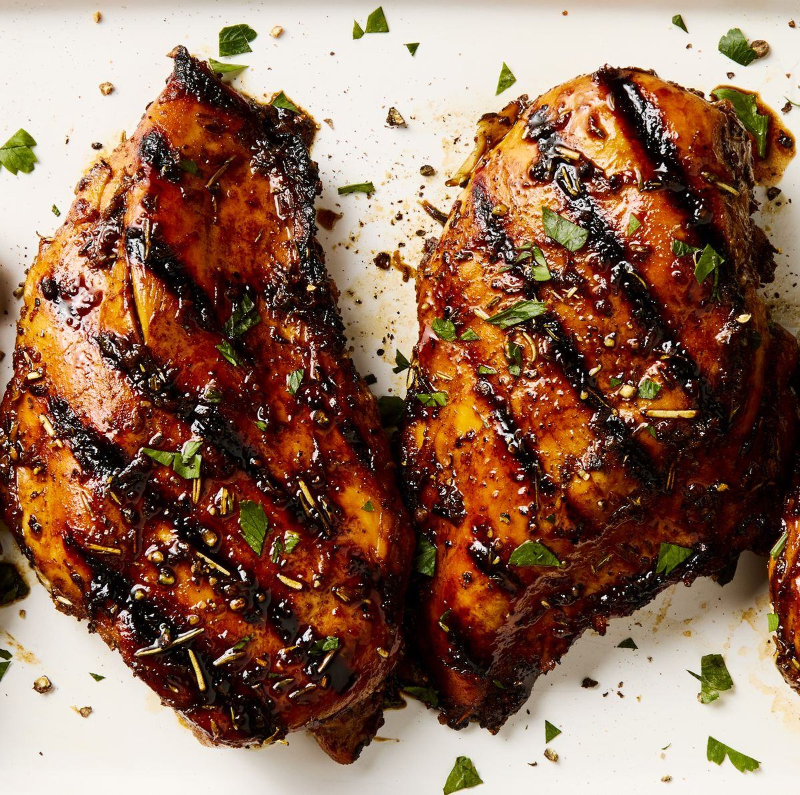

Grilled Chicken

This is a recipe I mostly adapted from that Mythical Kitchen guy, Josh.
This recipe is super simple. Follow along or don't. It's all up to you! If you follow along, you'll have juicy, flavorful chicken breast, every time! The key part is the dry brine before cooking. This is crucial to having a juicy piece of chicken.
Ingredients
- 3 boneless, skinless chicken breasts
- Salt enough for brining and seasoning
- Seasonings: Be creative! my go to's are salt, pepper, paprika, garlic powder, and some kind of green herb.
- Olive oil or butter. Up to you!
Instructions
- Lay out your chicken thawed chicken breasts and pat them dry. Evenly coat the chicken on both sides with salt. Let this chill in the fridge for 30 min to an hour.
- When your chicken is almost done brining, preheat your blackstone to a low to medium setting.
- Remove your brined chicken from the fridge and pat them dry once again.
- Mix together your seasonings and liberally apply it to both sides of the chicken.
- Put your oil or butter down on the cooking surface.
- Lay the chicken breasts down and leave them be! We want a nice sear. Let it cook for about 5 minutes. You will start to see the color change on the bottom of the chicken going up to the middle.
- Flip your chicken and let it finish cooking another 4 or 5 minutes.Safe chicken temperature is 165 degrees F.
- Remove your chicken from the grill and let it rest.
- Enjoy!